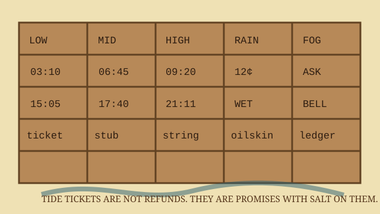

RACK AUDIT
12 STUBSTide Ticket Rack

Tickets are sold from the second nail down. A tide ticket is not passage; it is permission to argue with the water from the correct side of the rope.
blue stub
good for low-water loading only. Clerk writes boat name on the wet side. Void if folded into a gull.
yellow stub
mid-tide errand rate: 12¢, or 9¢ with own lantern after October.
green stub
high-tide holdover; lets one crate wait behind the bait freezer, not inside it.
red stub
fog ticket. Buyer must state destination twice: once to clerk, once to bell.
Observed tides: 03:10 low; 09:20 high; 15:05 low; 21:11 high. Add six minutes when wind pins newspaper to the east door.